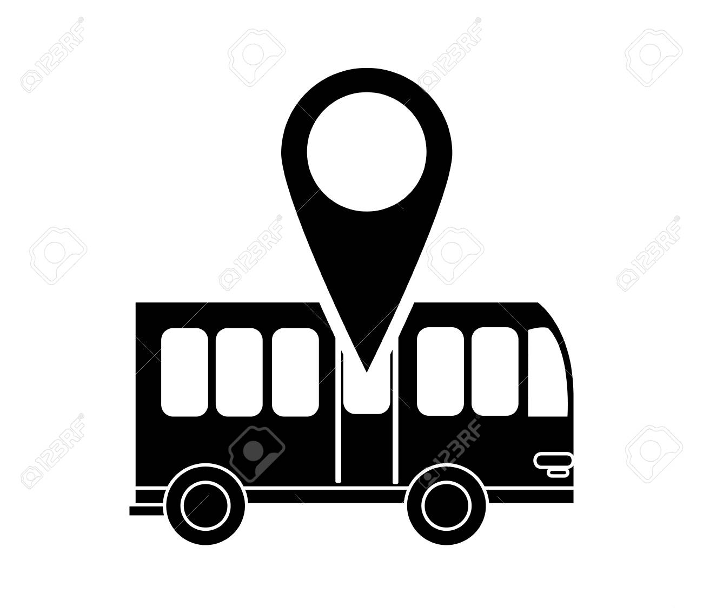
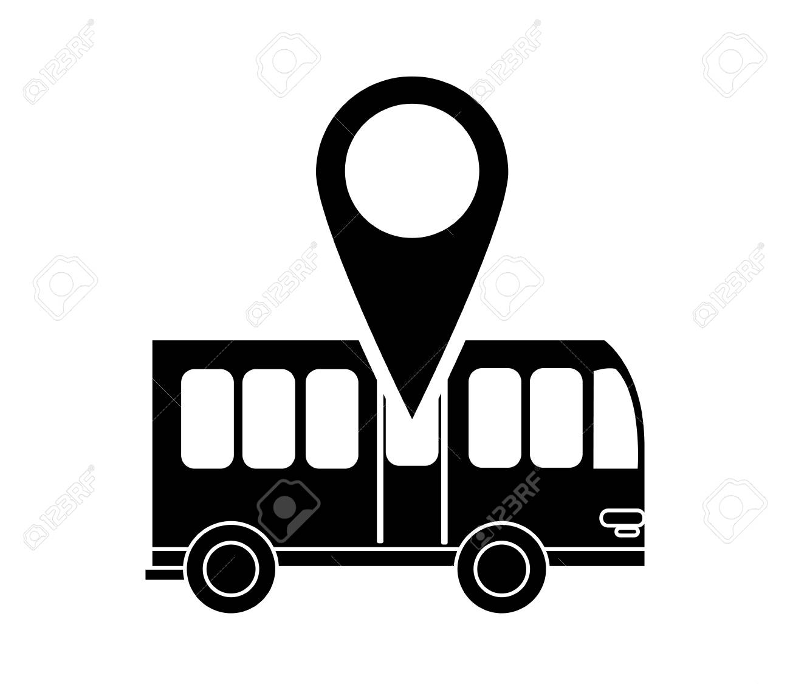

Artículo sobre los proyectos
Los proyectos que se presentarán en la asignatura de Programación del tercer semestre de Ingeniería de Sistemas permitirán
a los estudiantes proponer ideas innovadoras para solucionar problemas de manera creativa y eficaz.
Esta actividad es una excelente oportunidad para identificar diversas problemáticas presentes en
nuestro entorno, ya que muchas veces no es fácil notar qué situaciones pueden optimizarse o
resolverse con el uso adecuado de la tecnología.
Los proyectos se desarrollarán en equipos de trabajo, lo que permitirá a los estudiantes aprender a
trabajar en grupo, a comunicarse de manera efectiva y a distribuir tareas de acuerdo a las habilidades
de cada integrante. Además, se fomentará la creatividad y la innovación, ya que los estudiantes tendrán
la libertad de proponer soluciones originales a los problemas planteados.
arrow_drop_down Propuestas:
- Los jóvenes están desarrollando una aplicación para ayudar a los nuevos estudiantes a reforzar los conocimientos previos necesarios para comprender todos los temas de su carrera.
En este proyecto, un grupo de estudiantes planea desarrollar un juego basado en decisiones que influirán en el futuro de la realidad.
El objetivo es concientizar a los jugadores sobre cómo sus elecciones impactan al medio ambiente de su mundo.-
En este grupo realizaron un analisis de deficiencias en una empresa, de acuerdo a esto encontraron que no existe una forma de ordenar quien ha utilizado una herramienta las cuales pueden ser costosas debido a su calidad. De esta forma se arriesgan a tener perdidas en estos elementos, por lo que decidieron hacer una base de datos con el fin de que no ocurra esto y tener un control. -
Un problema que le suele ocurrir a muchas personas es el llegar tarde porque a veces no se tiene una medida de tiempo de cuanto demoraran en llegar los buses al paradero más cercano, algunas veces tarda más y otras veces menos. Este grupo de estudiantes planea tener una forma de tener un seguimiento de los buses para lograr llegar a tiempo a ellos sin tener la típica incertidumbre de cuanto tardara En llegar o si ya paso con antelación.
maximize Avanza U
maximizeVideojuego interactivo
maximizeBase de datos de almacen
maximizeGps de transporte
 
